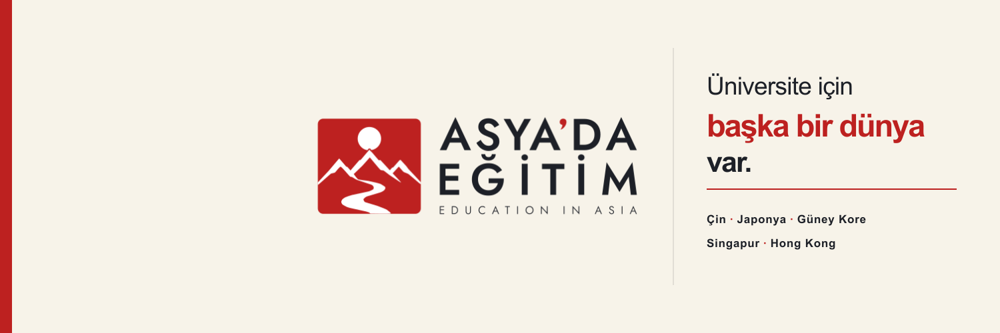
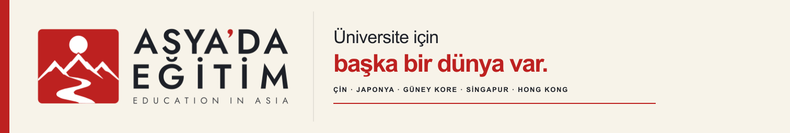
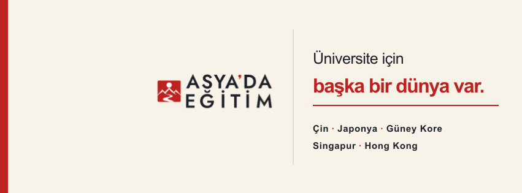

1500 × 500 px · 3:1 · avatar ve dikey kırpım güvenli alanı


Kilitli lockup: H-02/light · aynı zemin ve tipografik dil LinkedIn ile sürdürülüyor.
SOCIAL COVER SET · V03
Beş eğitim rotası: Çin, Japonya, Güney Kore, Singapur ve Hong Kong. LinkedIn’deki açık zeminli editoryal yaklaşım X ve Facebook’a da taşındı; ülke isimleri artık renkli kutular yerine sade tipografik bir liste.
Güncel yükleme ölçüleri: X 1500×500 px · LinkedIn Page 1512×256 px · Facebook Page 851×315 px. Üç tasarım da platformun profil fotoğrafı örtüşmesini ve farklı ekranlardaki kırpımları gözetir.

1500 × 500 px · 3:1 · avatar ve dikey kırpım güvenli alanı
Kilitli lockup: H-02/light · aynı zemin ve tipografik dil LinkedIn ile sürdürülüyor.

1512 × 256 px · 5.9:1 · güncel LinkedIn Page ölçüsü
Kilitli lockup: H-02/light · 3 MB üst sınırıyla uyumlu PNG.

851 × 315 px · yaklaşık 2.7:1 · Meta önerilen yükleme ölçüsü
Kilitli lockup: D-04/light · sol profil fotoğrafı örtüşme alanı boş.